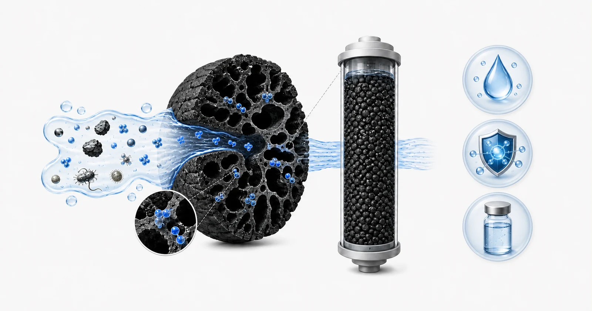
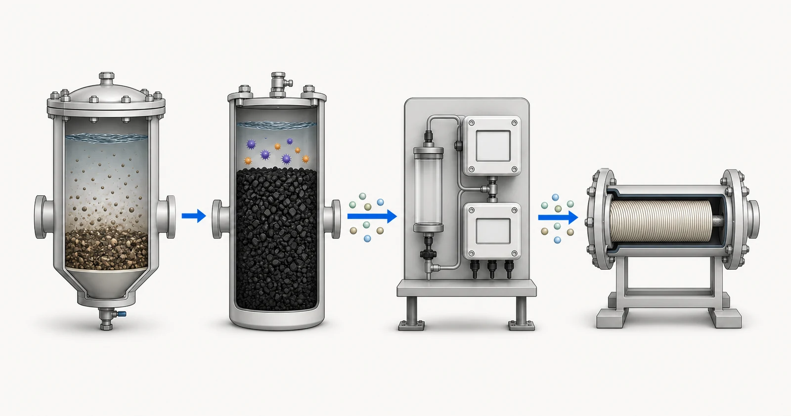

Direct answer
Activated carbon is an adsorption medium, not a universal purifier. Its role must be defined against a named treatment target, the feed-water composition, competing organic matter, flow and the way the media will be installed and maintained. Granular media, carbon blocks, powdered carbon and inline cartridges create different contact conditions and operating limits. A useful recommendation therefore starts with a water or process-fluid report and a treatment brief. Yuchen Water can review that information, discuss activated-carbon materials and cartridge or vessel formats, and support related equipment questions, but final performance must be tied to verified media evidence and the proposed operating conditions.

- Feed-water matrix and competing substances
- Porous activated-carbon surface
- Adsorption within accessible pores
- Treatment boundary and monitoring
Conceptual illustration. Not test results, product certification or an engineering drawing.
Start with the buyer's problem
Buyers often begin with a broad request such as removing odor, chlorine, color, an organic compound or an unknown taste problem. Those requests describe a symptom, not a design basis. The first task is to identify the source of the water, how variable it is, which compound or measurable endpoint matters, and whether the carbon stage is intended as the main treatment step, polishing, or pretreatment before a membrane. A municipal-water cartridge and an industrial GAC vessel may both contain activated carbon while having very different evidence and monitoring needs.
The second question is what activated carbon is not expected to do. It should not be presented as a substitute for sediment control, hardness management, disinfection, ion exchange or membrane separation when those functions are required. Some dissolved substances may not be strongly adsorbed, and competition from natural organic matter can reduce useful capacity for a target compound. The review must consider the complete treatment train rather than assigning every water-quality problem to one media bed.
What report and operating data are required
A useful technical review combines water chemistry with hydraulic and commercial operating information. Send current results where available and label samples by source and date so seasonal or process variability is visible.
- water source, sampling date and any known seasonal or batch variation
- target compounds, inlet concentrations and required outlet target where known
- pH, temperature, turbidity and suspended-solids information
- TOC or COD, color, odor and relevant organic indicators
- free chlorine, total chlorine or chloramine when oxidant control is involved
- average flow, peak flow, daily runtime and operating pattern
- existing pretreatment, available housing or vessel and pressure limits
- monitoring method, sampling points and proposed replacement or regeneration practice
A report should be recent enough to represent the proposed source and should identify the sample date and location. If the water changes by season, production batch or operating state, provide the range rather than one convenient result. State the required treated-water objective separately from the current analysis. When a value is unknown, mark it as unknown; a visible gap is safer than a guessed number.
Hydraulic information belongs beside chemistry. Average flow alone can hide short peak conditions, intermittent duty and long stagnation. Confirm daily runtime, peak demand, available pressure, allowable pressure loss, equipment dimensions and who will monitor and replace the carbon. These details decide whether an otherwise plausible media can be used in a serviceable system.
Selection logic
Selection begins by separating the treatment goal from the product form. A target compound, taste-and-odor issue or oxidant residual creates an adsorption question. Flow, space, pressure drop and service access create a configuration question. The carbon source, activation method, particle size and post-treatment create a media-specification question. These three questions interact, but none should be answered only from a label such as GAC, CTO or coconut shell.
Media specifications can help compare supplied materials, yet a single index does not establish field capacity. Iodine number, mesh range, ash, moisture and hardness describe different aspects of a sample or lot. They do not replace a contaminant-specific test, pilot work or a reviewed operating basis. Where the treatment objective is sensitive, the recommendation should state what evidence exists, what remains unverified and what monitoring will confirm actual breakthrough.
The final direction also depends on lifecycle planning. The project needs a way to commission the carbon stage, flush fines where applicable, observe pressure loss, sample before and after the bed, and replace or regenerate media before the required outlet limit is exceeded. Without those controls, even an appropriate material can be used beyond its practical capacity or under hydraulic conditions that create channeling and incomplete contact.
Pretreatment, equipment and operating context
Upstream solids can occupy bed space, block a carbon block or create uneven flow. Sediment filtration, clarification or UF may therefore be reviewed before carbon for some sources. Downstream security filtration may be considered where media fines or equipment protection matter. Biological conditions, warm water and long stagnation also require attention because carbon is not itself a sanitation program.
For industrial vessels, review bed depth, loading rate, contact time, backwash needs, distributor design and whether lead-lag vessels or parallel trains are needed for continuity. For cartridges, confirm dimensions, connection, flow range, pressure loss, construction and replacement access. Yuchen Water can support the material supply and equipment matching discussion after the report and operating brief are available.

- Particle pretreatment
- Activated-carbon oxidant control
- Residual monitoring
- RO membrane stage
Conceptual illustration. Not test results, product certification or an engineering drawing.
Common mistakes
- Choosing only by carbon source or iodine number
- Treating a laboratory sample result as a guarantee for every cartridge
- Ignoring competing organics, turbidity and biological conditions
- Setting a calendar replacement interval without monitoring or capacity evidence
- Assuming a carbon stage performs membrane, disinfection or softening functions
Evidence and service boundary
Published technical information should distinguish a media specification from a treatment claim. A treatment claim needs a named contaminant, test method, inlet challenge, flow or contact condition, endpoint and tested construction. If one of those elements changes, the evidence may no longer describe the proposed project. Yuchen Water will identify these gaps during review rather than extending one report to unrelated materials.
The supply scope can include activated-carbon media, carbon cartridges, housings or vessel-related components and equipment technical support. It does not create an unconditional promise of service life, adsorption capacity or outlet water quality. Those outcomes depend on the approved material, source water, system design, operation, maintenance and a documented monitoring plan.
Yuchen Water reviews the target and evidence first, then identifies the appropriate carbon format and material questions, supporting pretreatment and equipment needs, and the documents or tests still required. The output can be a preliminary direction, a request for missing information, or a supportable material and equipment recommendation. A recommendation is not released simply because a buyer supplied a product name.
After supply, technical support can cover document confirmation, installation and flushing questions, remote commissioning guidance, monitoring points and replacement planning within the agreed scope. Actual performance still depends on the approved material, complete equipment, source water, installation, operation and maintenance. Published guidance cannot replace the project review.
No final material, capacity, service life, removal percentage or project result is promised before the report, construction, evidence and operating conditions are reviewed.
Official technical sources
These sources explain treatment principles or certification boundaries. They do not certify Yuchen Water products and do not replace project-specific evidence.
Related activated-carbon guidance
Continue through the knowledge cluster, review selected sample evidence only within its stated limits, compare product formats, or submit the report for a technical review.